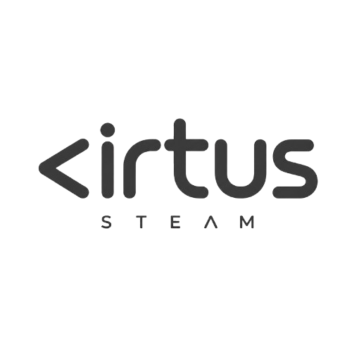
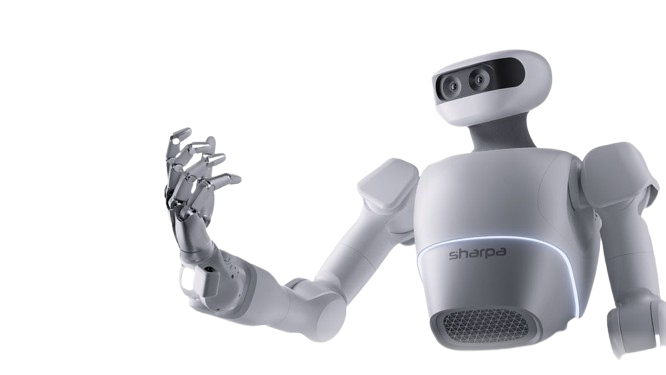

"Tenemos el deber urgente de permanecer profundamente humanos, custodiando con amor esa magnífica humanidad que se nos ha dado y revelada en plenitud en Cristo, y que ninguna máquina podrá jamás sustituir en su esplendor."
Papa León XIV · Magnifica Humanitas, §15 · 2026
VIRTUS STEAM nació de una pregunta honesta que nos hicimos después de años enseñando tecnología: ¿para qué sirve que un niño programe un robot si no sabe quién es ni para qué vive? El Papa León XIV lo dijo con claridad en su encíclica Magnifica Humanitas: la tecnología "puede curar, conectar, educar, cuidar la Casa común — pero también puede dividir, descartar, generar nuevas injusticias." Todo depende de quién la enseña y con qué propósito.
Por eso el Papa llama hoy a construir una "alianza educativa para la era digital" — y nosotros respondemos a ese llamado. VIRTUS STEAM es esa alianza hecha programa: tecnología rigurosa enraizada en fe, virtudes y propósito. Como decía San Juan Pablo II en Fides et Ratio, la fe y la razón son las dos alas del espíritu humano. Aquí enseñamos las dos.
En VIRTUS STEAM ponemos a Dios en el horizonte de nuestro actuar y al ser humano en el centro de nuestras decisiones — con las palabras del mismo León XIV. Cada proyecto que construyen nuestros estudiantes es una oportunidad para trabajar el carácter. Cada fallo que resuelven es un acto de perseverancia. Cada robot que presentan es un acto de fe en su propia capacidad. No formamos técnicos — formamos personas.
Las virtudes que cultivamos
VIRTUS STEAM no nació en una sala de juntas ni en una presentación de PowerPoint. Nació en el laboratorio de RoboWorks Ambato, una clase a la vez, un estudiante a la vez. Durante más de año y medio desarrollamos, probamos y refinamos cada módulo, cada planificación, cada virtud integrada al aprendizaje — con niños reales, con resultados reales.
Lo que hoy ofrecemos a las instituciones no es una promesa: es una metodología probada. Conocemos los momentos en que el estudiante se frustra. Sabemos cuándo necesita más desafío. Entendemos cómo medir el progreso más allá de una calificación. Lo vivimos primero nosotros para poder enseñarlo bien.
Somos de Ambato. Conocemos al estudiante de la Sierra ecuatoriana, su contexto, sus capacidades y su potencial. VIRTUS STEAM no es un programa importado adaptado — es un programa nacido aquí, para ellos.
Descomponer problemas complejos en pasos simples. Una forma de pensar que trasciende la tecnología y se aplica en cualquier área de la vida.
No basta imaginar — hay que construirlo. En VIRTUS STEAM las ideas se prueban, se modifican y se presentan. La creatividad se vuelve disciplina.
Cada robot que no funciona es una pregunta abierta. Aprender a diagnosticar, ajustar y probar de nuevo es la habilidad más demandada en el mundo laboral actual.
Trabajar en equipo bajo presión. Comunicar una idea. Recibir crítica constructiva. El laboratorio de robótica es también un laboratorio de habilidades sociales.
Ver funcionar algo que tú mismo construiste cambia cómo un joven se percibe a sí mismo. Ese momento vale más que cualquier calificación.
Desde estructuras LEGO hasta piezas en SolidWorks. Los estudiantes aprenden a diseñar con propósito, construir con precisión y presentar con orgullo.
El corazón de nuestra propuesta. Un programa estructurado grado a grado, desde los 3 hasta los 15 años, que integra robótica educativa, programación, diseño 3D y virtudes en un solo currículo. Cada nivel tiene su propio enfoque pedagógico, sus herramientas y sus objetivos de desarrollo — siempre alineados al currículo nacional del MINEDUC.
La robótica se convierte en el vehículo para aprender y practicar el inglés. Los estudiantes dan instrucciones, describen procesos y presentan proyectos en inglés desde el primer día. Una propuesta única en Ecuador que combina el idioma más demandado del mundo con la tecnología más emocionante del siglo.
Para los estudiantes que quieren ir más lejos. El Club de Robótica es el espacio donde los talentos florecen fuera del aula: proyectos avanzados, preparación táctica y emocional para competencias nacionales e internacionales, liderazgo técnico y representación institucional con orgullo.
El Club de Robótica de VIRTUS STEAM prepara a los estudiantes no solo técnicamente, sino también táctica y emocionalmente para competir. Porque ganar un torneo de robótica requiere lo mismo que ganar en la vida: preparación, equipo y carácter.
Acompañamos a cada equipo desde la primera práctica hasta la entrega final — con mentoría técnica, estrategia de presentación y apoyo logístico. Su institución compite. Nosotros la respaldamos.
Kits de robótica, impresoras 3D y todo el equipamiento necesario para operar desde el primer día del año lectivo.
Sistema propio con portafolios estudiantiles, tareas interactivas, seguimiento docente y certificados verificables con QR.
Currículo completo por grado, alineado al marco nacional del MINEDUC, listo para implementar desde el primer día. El docente no parte de cero — parte con todo.
No capacitamos y nos vamos. Estamos presentes, activos, semana a semana. Formamos a los docentes, resolvemos dudas en tiempo real y co-construimos el programa con ellos a lo largo de los tres años.
Espacio extracurricular incluido para los estudiantes que quieren ir más lejos. Preparación para torneos y proyectos avanzados.
El programa bilingüe integrado. Inglés a través de la robótica para fortalecer el perfil internacional de su institución.
Acompañamiento en torneos nacionales e internacionales. Su institución representada con preparación técnica y emocional completa.
Nuestro equipo viaja a cada campus de la institución. Somos de Ambato — no hay tiempo de respuesta largo, no hay excusas de distancia. Cuando la institución nos necesita, estamos ahí.
Solo necesita el sistema, el acompañamiento y la convicción de que sus estudiantes pueden más. VIRTUS STEAM llega con todo eso — y con la certeza de que la educación más poderosa es la que forma el alma y la mente al mismo tiempo. El año lectivo 2026 puede ser el punto de inflexión de su institución.